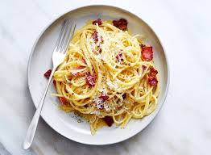

Back to Recipe Home
Carbonara

Description
Pasta Carbonara is one of the 4 traditional Roman pastas. While ancient, it's been popular for a long time,
and within recent memory has been popularized by such internet culinary personalities as Anthony Bourdain and J. Kenji Lopez Alt.
The dish, reductively referred to as "Roman Mac 'n Cheese," is a simple pasta dish that is sure to delight your whole family.
A rich sauce of eggs, Percorino Romano, and pancetta fat is the star of the show, and the recipe below will result in a glossy,
perfectly emulsified sauce every time!
Ingredients
- Kosher salt
- 1 tsp freshly ground black pepper
- 4 eggs, beaten
- 1 lb pancetta, guanciale, or bacon, diced
- 1 lb pasta of your choice (spahgetti, linguine, and bucatini all work well)
- 1/2 cup Pecorino Romano or Parmesan cheese, grated
Steps
- Bring a pot of salted water to a boil. Add pasta and cook, stirring, until al dente.
- Meanwhile, combine guanciale (or pancetta or bacon) with 2 tablespoons (30ml) olive oil in a large skillet and cook, stirring frequently, over medium heat, until fat has rendered and guanciale is crisp, about
- In a large, metal heatproof mixing bowl, whisk together whole eggs and yolks, Pecorino Romano, Parmigiano-Reggiano, and black pepper.
- Using tongs and/or a strainer, transfer pasta to skillet with crisped guanciale and its fat; be sure not to drain boiling pasta water. Add remaining 1 tablespoon (15ml) olive oil to pasta and stir to combine; let cool slightly. Scrape pasta, pork, and all the fat into the egg mixture. Measure 1/2 cup (120ml) pasta-cooking water and add to pasta and egg mixture. Stir well to combine.
- Set mixing bowl over pot of boiling pasta water (make sure bottom of bowl does not touch the water) and cook, stirring quickly with tongs, until sauce thickens to a creamy, silky consistency and leaves trails as you stir. Remove from heat, season with salt if needed, and divide into bowls. Serve right away, topping with more grated cheese and freshly ground pepper as desired.